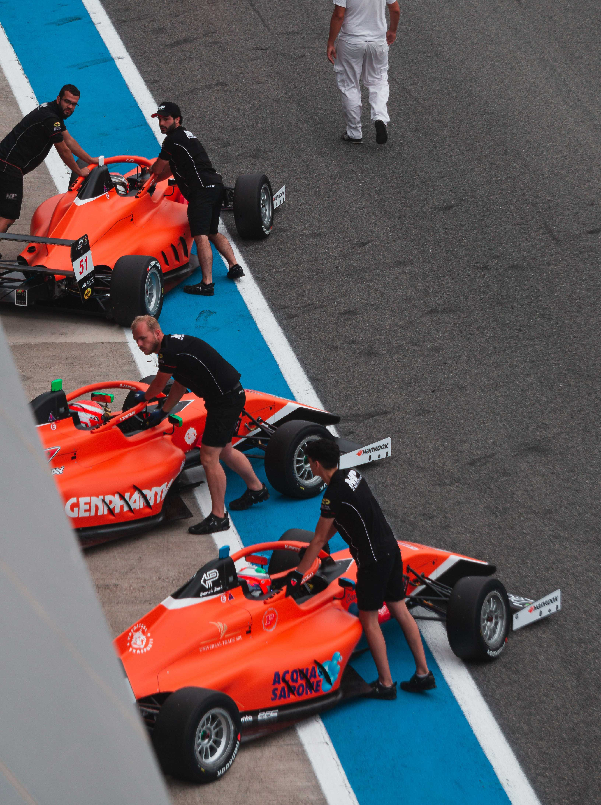

Mi historia
Todo comenzó con la cámara
analógica de mis padres y
muchos eventos automovilísticos.
Desde pequeño, los coches, las motos y las carreras han sido mi motivación. Eventos como Cars & Coffee y encuentros locales fueron el lugar donde descubrí que quería rodearme de ese mundo y capturar su esencia. Con el tiempo, esta afición se convirtió en mi trabajo y forma de vida, fusionando esta afición con la fotografía.


Mi Experiencia
Estudiar fotografía fue mi trampolín, me permitió mejorar la técnica, por lo que hicieron falta unos años y más práctica para llegar a este punto de mi carrera.
Fotografía
90%
Cortometrajes
85%
Photoshop
90%